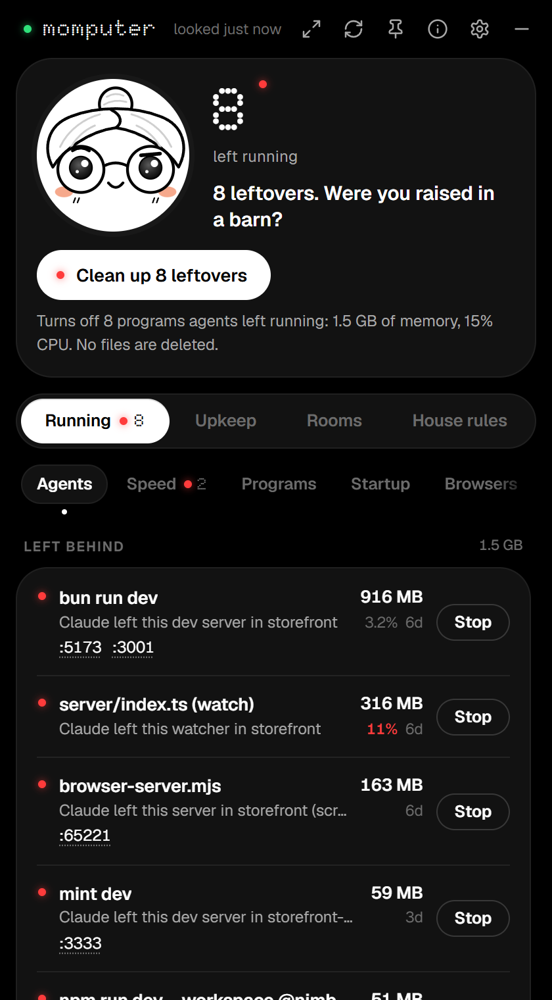

A mom for you, your computer and your AIs.
She turns off what Claude Code, Codex and friends left running, frees up disk space, and checks your drives, memory, sound and Windows settings. A little widget by the clock, and BIG MODE when you want the whole picture.
momputer is for Windows PCs. Open this page on yours to download it.
- Free for personal use
- Sends nothing about you
- Asks before it cleans

How to install
Three steps, about a minute.
-
Download
Press Download for Windows above. If you end up on GitHub's releases page, open Assets and pick the file ending in
-setup.exe.If your browser says the file isn't commonly downloaded, that's only because it's new: choose Keep.
-
Open it
Double-click the file in your Downloads. momputer isn't code-signed yet, so Windows may say "Windows protected your PC". Click More info, then Run anyway.
Then Windows asks whether it may make changes: choose Yes. momputer installs for everyone on the PC, in Program Files.
-
Say hi to mom
She lives in the tray, by the clock. If you don't see her, click the little ^ arrow there.
Click her to open the widget. Right-click her for "Clean up leftovers". Closing the widget just tucks it away; she keeps watching.
Check the download
optionalEvery release comes with SHA256SUMS.txt, a fingerprint for each file. To check yours, open PowerShell (Start, type PowerShell) and run:
Get-FileHash "$HOME\Downloads\momputer_*-setup.exe"The Hash it prints should match the line for that file in SHA256SUMS.txt. Capital or small letters don't matter.
Questions
Is it free?
Yes, for personal use: at home, for hobby projects, if you're a student, at a nonprofit, and for research. If you use it for work at a company, you need a commercial license: open an issue with the Commercial license template and we'll sort it out.
The license is PolyForm Noncommercial 1.0.0.
Does it need administrator rights?
Only to install, once. momputer installs for everyone on the PC, in Program Files, so Windows asks.
Mom herself never runs as administrator. A few clean-ups need one (like Windows Update's leftover downloads); when you press their button, Windows asks you first.
Does it send anything anywhere?
Nothing about you or your PC. The one thing momputer asks the internet is whether there's a newer version: one request to GitHub a day, the same from every copy. A switch in Settings turns that off. Links in the widget open in your browser.
How do I uninstall it?
Open Settings, then Apps, then Installed apps (on Windows 10: Apps & features). Find momputer and choose Uninstall.
If you switched on the Claude Code or Codex check-ins under House rules, switch them off first, so mom's hooks come back out of their settings. Mom's own folder, .momputer in your user folder, keeps her settings and backups; delete it if you want those gone too.
Where's the source code?
All of it is on GitHub: github.com/Thisisily/momputer. The README explains how mom works and how to build momputer yourself.